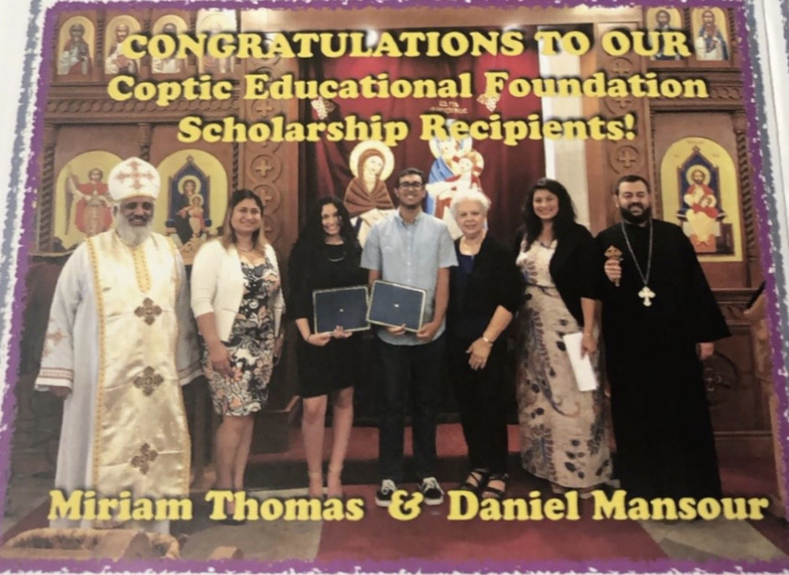
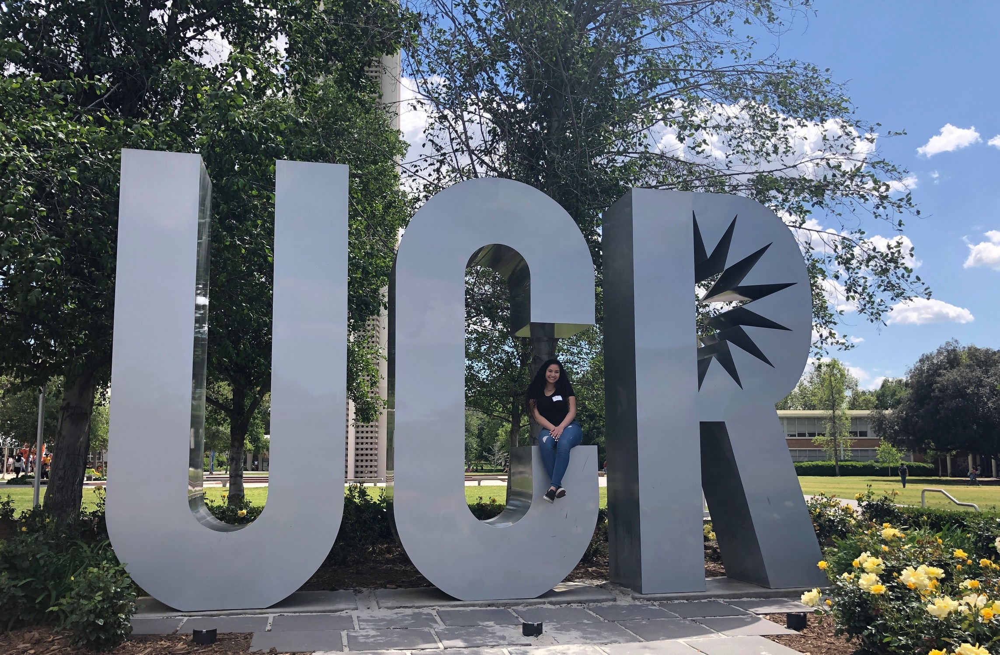
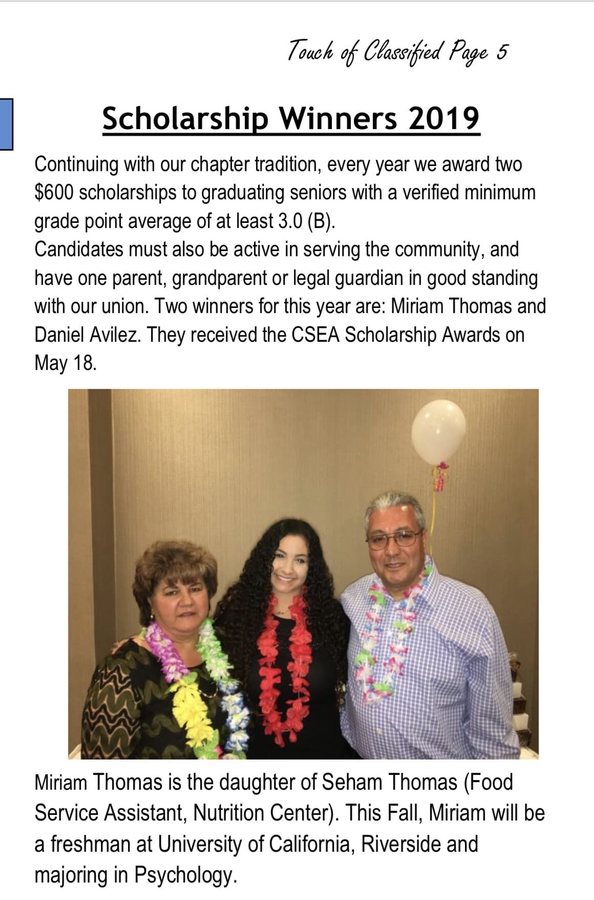
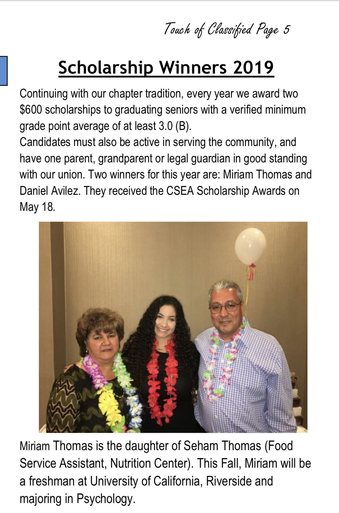
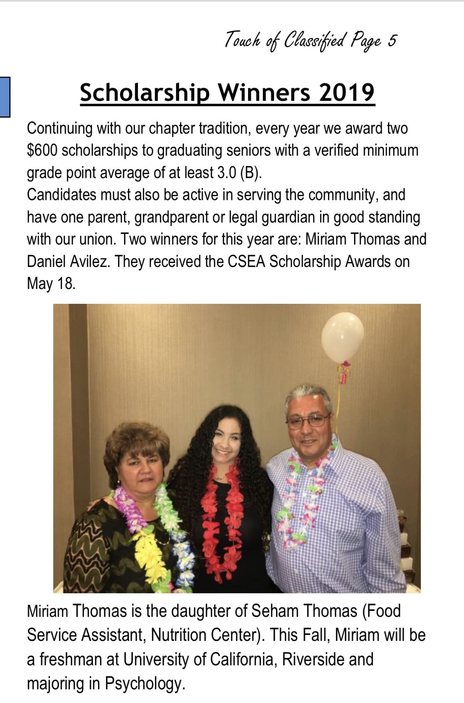

Miriam Thomas
Psychology
Hello! My name is Miriam Thomas and I am currently a first-year Psychology major at the University of California, Riverside. I chose to get a degree in Psychology due to my interest in the subject and its ability to be applied to multiple professions. I am currently torn between furthering my education in either physical therapy or pharmacy. While they are two distinct professions, they both include some aspects of patient interaction and require similar prerequisites for graduate school. Thus granting some time to dwell on this decision. To ease the decision-making process, I plan on volunteering/shadowing people in both professions to see how I like each job. As well as, participating in extracurricular activities related to those fields. I am currently involved in two clubs on campus: Coptic Club and Unheard Cries. Coptic Club allows me to connect with my religion away from home through various speakers and events. Unheard Cries is a charity that helps dent Middle Eastern poverty through various fundraising efforts.
Outside of the classroom, I enjoy volunteering, hiking, and spending time with friends and family. Volunteering is one of my favorite pass times because it allows me to give back to disadvantaged communities. Some projects/organizations that I have volunteered with are FOCUS OC and the American Red Cross. FOCUS OC is a religious-based organization that goes to local motels/parks every Sunday and supply homeless people with a meal and supplies(canned food, snacks, hygiene products) for the week. As a volunteer, I would help prepare and serve the meals. Volunteering for the Red Cross allowed me to help patients in need through blood donations, there I served as a Blood Donor Ambassador. In addition to volunteering, my faith is a key thread of my identity. I was born into the Coptic Orthodox Christian Faith and have been practicing the religion my whole life. I am an active member at my church, I attend weekly liturgies, serve as a Sunday School teacher, and often volunteer at events. Hiking is one of my favorite forms of exercise, besides sports such as soccer and basketball. My family and friends are very important to me. moving away for college made me appreciate my relationships more, which is why I enjoy spending time with them. They are a great support system and are always there to help me in every chapter of my life.
Experience
Blood Donor Ambassador
• Register Donors
• Restock supplies
• Monitor Donors after their donation to ensure they don't faint
President
• Run Weekly Meetings
• Plan fundraisers
• Host large scale events
Education
Sunny Hills High School
University of California Riverside
Portfolio


 

